我们介绍 Mixtral 8x7B，一个稀疏专家混合（Sparse Mixture of Experts，SMoE）语言模型。Mixtral 的架构与 Mistral 7B 相同，区别在于每层由 8 个前馈块（即专家）组成。对于每个 token，在每一层，路由网络都会选择两个专家来处理当前状态，并合并它们的输出。尽管每个 token 只会使用两个专家，但在不同时间步，所选择的专家可能不同。因此，每个 token 都能访问 47B 参数，但在推理期间只使用 13B 激活参数。Mixtral 的训练上下文长度为 32k token，在所有接受评测的基准上，它的表现都超过或媲美 Llama 2 70B 和 GPT-3.5。尤其是在数学、代码生成和多语言基准上，Mixtral 远远超过 Llama 2 70B。我们还提供了经过指令遵循微调的模型 Mixtral 8x7B – Instruct，它在人工评测基准上超过 GPT-3.5 Turbo、Claude-2.1、Gemini Pro 和 Llama 2 70B – chat 模型。基础模型和指令模型均以 Apache 2.0 许可证发布。
代码：https://github.com/mistralai/mistral-src
网页：https://mistral.ai/news/mixtral-of-experts/
本文介绍 Mixtral 8x7B，一个以 Apache 2.0 许可证发布、权重开放的稀疏专家混合模型（SMoE）。Mixtral 在大多数基准上超过 Llama 2 70B 和 GPT-3.5。由于对每个 token 仅使用参数的一个子集，Mixtral 在 batch 较小时能够提供更快的推理速度，在 batch 较大时能够提供更高的吞吐量。
Mixtral 是一个稀疏专家混合网络。它是仅包含解码器的模型，其前馈块从 8 组不同的参数中进行选择。在每一层，针对每个 token，路由网络选择其中两组参数（“专家”）来处理该 token，并以相加的方式合并其输出。这项技术能够增加模型的参数量，同时控制成本和延迟，因为对于每个 token，模型只使用全部参数中的一部分。
Mixtral 使用多语言数据进行预训练，上下文长度为 32k token。在多项基准上，其表现达到或超过 Llama 2 70B 和 GPT-3.5。尤其是，（接下页）
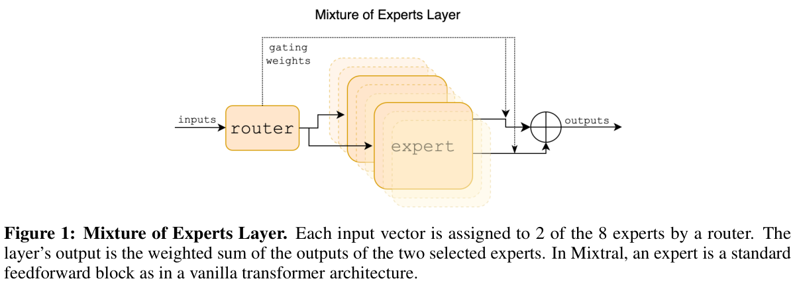
（接上页）Mixtral 在数学、代码生成以及需要多语言理解的任务上展现出卓越能力，在这些领域显著超过 Llama 2 70B。实验表明，Mixtral 能够成功检索其 32k token 上下文窗口中的信息，无论序列长度以及信息在序列中的位置如何。
我们还介绍了 Mixtral 8x7B – Instruct，这是一个使用监督微调和直接偏好优化（Direct Preference Optimization）[25] 进行指令遵循微调的聊天模型。在人工评测基准上，它的表现显著超过 GPT-3.5 Turbo、Claude-2.1、Gemini Pro 和 Llama 2 70B – chat 模型。Mixtral – Instruct 还在 BBQ、BOLD 等基准上表现出更少的偏见和更均衡的情感分布。
我们以 Apache 2.0 许可证1发布 Mixtral 8x7B 和 Mixtral 8x7B – Instruct，供学术和商业用途免费使用，从而确保广泛的可访问性及用于多种应用的潜力。为了让社区能够使用完全开源的技术栈运行 Mixtral，我们向 vLLM 项目提交了修改，该项目集成了 Megablocks CUDA 内核，以实现高效推理。Skypilot 还支持在云端任意实例上部署 vLLM 端点。
Mixtral 基于 transformer 架构 [31]，采用了 [18] 中描述的相同修改，主要的例外在于 Mixtral 支持 32k token 的完全稠密上下文长度，并将前馈块替换为专家混合层（第 2.1 节）。表 1 汇总了模型架构参数。
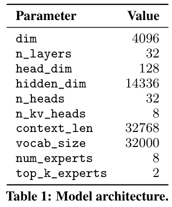
我们简要介绍专家混合层（图 1）。更深入的介绍见 [12]。对于给定输入 \(x\)，MoE 模块的输出由各个专家网络输出的加权和决定，其中权重由门控网络的输出给出。也就是说，给定 \(n\) 个专家网络 \(\{E_{0}, E_{i}, ..., E_{n-1}\}\)，专家层的输出为：
∑i=0n−1 G(x)i · Ei(x).
这里，\(G(x)_{i}\) 表示门控网络的 \(n\) 维输出中对应第 \(i\) 个专家的分量，\(E_{i}(x)\) 是第 \(i\) 个专家网络的输出。如果门控向量是稀疏的，就可以避免计算门控值为零的专家的输出。实现 \(G(x)\) 有多种替代方式 [6, 15, 35]，但一种简单且性能良好的实现方式，是对线性层的 Top-K logits 取 softmax [28]。我们采用
G(x) := Softmax(TopK(x · Wg)),
其中，如果 \(\ell _{i}\) 属于 logits \(\ell \in \mathbb{R} ^{n}\) 中最大的 \(K\) 个分量，则 \((TopK(\ell ))_{i} := \ell _{i}\)，否则 \((TopK(\ell ))_{i} := -\infty\)。\(K\) 的值，即每个 token 使用的专家数量，是一个调节处理每个 token 所用计算量的超参数。如果在保持 \(K\) 不变的同时增加 \(n\)，就（接下页）
（接上页）能够在计算成本基本保持不变的同时增加模型参数量。这就引出了两种参数量的区别：模型的总参数量（通常称为稀疏参数量）随着 \(n\) 增长，而处理单个 token 时使用的参数量（称为激活参数量）随着 \(K\) 增长，直到 \(K\) 达到 \(n\)。
借助高性能专用内核，MoE 层可以在单个 GPU 上高效运行。例如，Megablocks [13] 将 MoE 层的前馈网络（FFN）运算表示为大型稀疏矩阵乘法，显著提升执行速度，并自然地处理不同专家被分配到不同数量 token 的情况。此外，MoE 层可以通过标准模型并行技术分布到多个 GPU 上，也可以通过一种称为专家并行（Expert Parallelism，EP）[28] 的特定划分策略实现。在执行 MoE 层期间，需要由某个特定专家处理的 token 会被路由到对应 GPU 进行处理，随后将该专家的输出返回原始 token 所在的位置。请注意，EP 会带来负载均衡方面的挑战，因为必须在 GPU 之间均匀分配工作负载，以避免单个 GPU 过载或出现计算瓶颈。
在 Transformer 模型中，MoE 层独立地应用于每个 token，并替换 transformer 块中的前馈（FFN）子块。对于 Mixtral，我们使用相同的 SwiGLU 架构作为专家函数 \(E_{i}(x)\)，并设置 \(K = 2\)。这意味着每个 token 都会被路由到两个具有不同权重集合的 SwiGLU 子块。综上，对于输入 token \(x\)，其输出 \(y\) 的计算方式为：
y = ∑i=0n−1 Softmax(Top2(x · Wg))i · SwiGLUi(x).
这一表达形式与 GShard 架构 [21] 类似，区别在于我们将所有 FFN 子块替换为 MoE 层，而 GShard 每隔一个块才进行替换，并且 GShard 对分配给每个 token 的第二个专家采用了更复杂的门控策略。
我们将 Mixtral 与 Llama 进行比较，并使用我们自己的评测流程重新运行全部基准，以进行公平比较。我们在多种任务上衡量性能，分类如下：
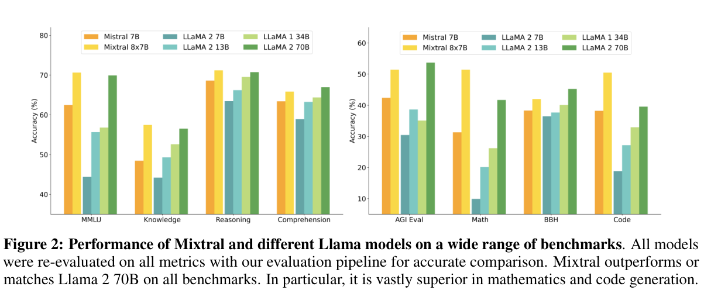
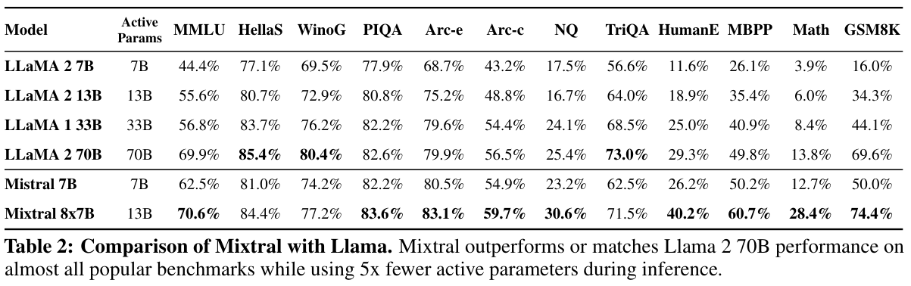
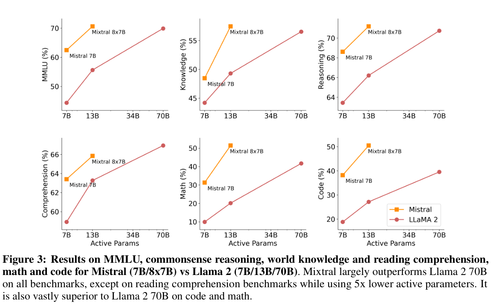
表 2 给出了 Mixtral、Mistral 7B、Llama 2 7B/13B/70B 和 Llama 1 34B2 的详细结果。图 2 比较了 Mixtral 与 Llama 模型在不同类别中的表现。Mixtral 在大多数指标上超过 Llama 2 70B。尤其是，Mixtral 在代码和数学基准上表现更为出色。
规模与效率。我们将模型性能与 Llama 2 系列进行比较，旨在理解 Mixtral 模型在成本与性能谱系中的效率（见图 3）。作为稀疏专家混合模型，Mixtral 对每个 token 仅使用 13B 激活参数。在激活参数量仅为其 1/5 的情况下，Mixtral 能够在大多数类别中超过 Llama 2 70B。
请注意，这一分析关注激活参数量（见第 2.1 节），它与推理计算成本直接成正比，但并未考虑内存成本和硬件利用率。部署 Mixtral 服务的内存成本与其稀疏参数量 47B 成正比，仍小于 Llama 2 70B。至于设备利用率，我们注意到，SMoE 层会因路由机制，以及每台设备运行多个专家时增加的内存访问而引入额外开销。它们更适合能够达到较高算术强度的批处理工作负载。
与 Llama 2 70B 和 GPT-3.5 的比较。表 3 报告了 Mixtral 8x7B 相对于 Llama 2 70B 和 GPT-3.5 的表现。我们观察到，Mixtral 的表现与另外两个模型相当或更好。在 MMLU 上，尽管 Mixtral 的容量明显更小（47B token，相比之下为 70B），它仍取得了更好的表现。对于 MT Bench，我们报告了当时可用的最新 GPT-3.5-Turbo 模型 gpt-3.5-turbo-1106 的表现。
2 由于 Llama 2 34B 没有开源，我们报告 Llama 1 34B 的结果。
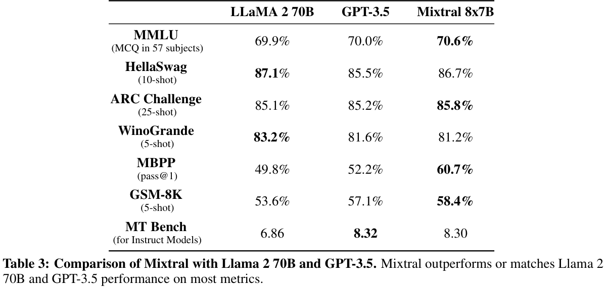
评测差异。在一些基准上，我们的评测协议与 Llama 2 论文报告的协议存在一些差异：1）在 MBPP 上，我们使用人工核验的子集；2）在 TriviaQA 上，我们不提供 Wikipedia 上下文。
与 Mistral 7B 相比，我们在预训练期间显著提高了多语言数据的采样比例。额外的容量使 Mixtral 能够在多语言基准上表现良好，同时维持较高的英文准确率。尤其是，如表 4 所示，Mixtral 在法语、德语、西班牙语和意大利语上显著超过 Llama 2 70B。
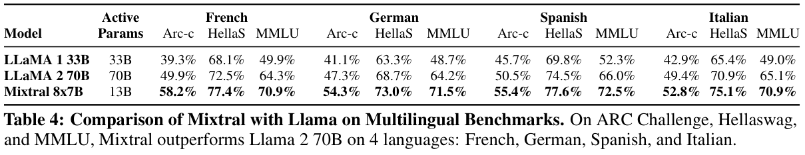
为了评估 Mixtral 处理长上下文的能力，我们在 [23] 提出的 passkey 检索任务上对其进行评测。这是一项合成任务，旨在衡量模型检索随机插入长提示中的 passkey 的能力。图 4（左）的结果表明，无论上下文长度或 passkey 在序列中的位置如何，Mixtral 都能达到 100% 的检索准确率。图 4（右）显示，随着上下文长度增加，Mixtral 在 proof-pile 数据集 [2] 子集上的困惑度单调下降。
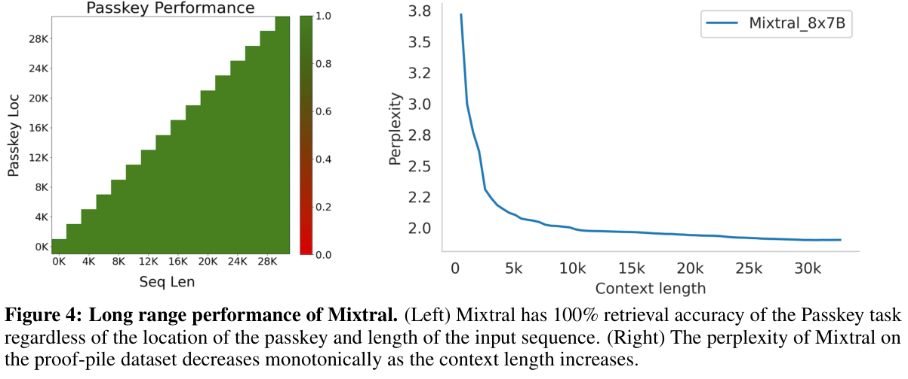
为了识别可以通过微调／偏好建模纠正的潜在缺陷，我们在问答偏见基准（Bias Benchmark for QA，BBQ）[24] 和开放式语言生成偏见数据集（Bias in Open-Ended Language Generation Dataset，BOLD）[10] 上衡量基础模型的表现。BBQ 由人工编写的问答题组组成，针对九种具有社会意义的类别中已经证实存在的社会偏见：年龄、残障状况、性别认同、国籍、外貌、种族／族裔、宗教、社会经济地位和性取向。BOLD 是一个大型数据集，包含 23,679 条英文文本生成提示，用于在五个领域中进行偏见基准评测。
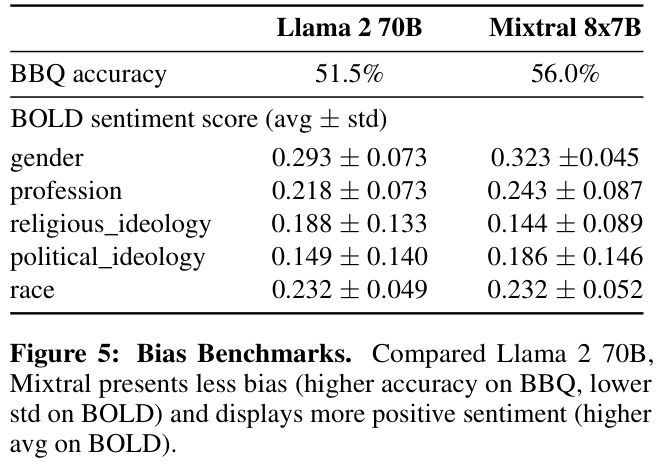
我们使用自己的评测框架，在 BBQ 和 BOLD 上对 Llama 2 和 Mixtral 进行基准评测，并在表 5 中报告结果。与 Llama 2 相比，Mixtral 在 BBQ 基准上表现出更少的偏见（56.0%，相比之下为 51.5%）。对于 BOLD 中的每个群体，更高的平均情感分数意味着情感更加正面，而更低的标准差表明群体内部的偏见更少。总体而言，Mixtral 比 Llama 2 表现出更加正面的情感，各群体内部的方差则相近。
我们先在指令数据集上使用监督微调（SFT），再在成对反馈数据集上使用直接偏好优化（DPO）[25]，来训练 Mixtral – Instruct。Mixtral – Instruct 在 MT-Bench [33] 上取得了 8.30 的分数（见表 2），使其成为截至 2023 年 12 月最好的开放权重模型。图 63 报告了 LMSys 开展的独立人工评测，结果表明 Mixtral – Instruct 超过 GPT-3.5-Turbo、Gemini Pro、Claude-2.1 和 Llama 2 70B chat。
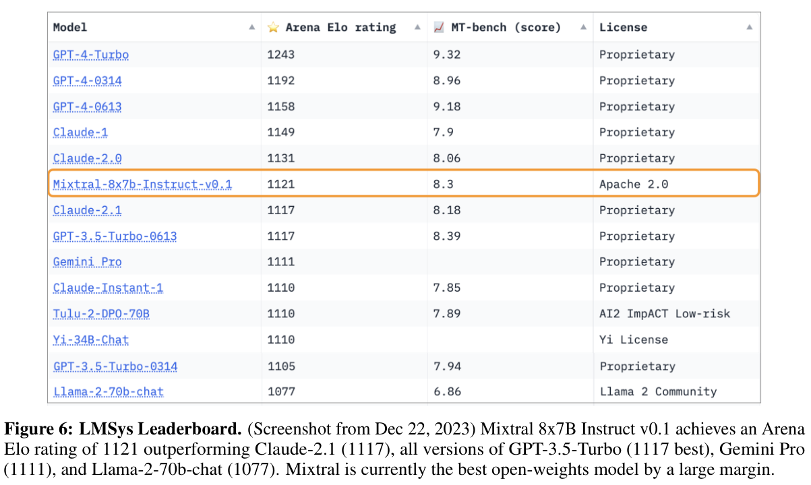
3 https://huggingface.co/spaces/lmsys/chatbot-arena-leaderboard
在本节中，我们对路由器的专家选择进行了一项小规模分析。具体而言，我们希望了解，某些专家是否在训练期间专门化于特定领域（例如数学、生物学、哲学等）。
为研究这一问题，我们在 The Pile 验证数据集 [14] 的不同子集上，衡量所选专家的分布。图 7 给出了第 0、15 和 31 层的结果（第 0 层和第 31 层分别是模型的第一层和最后一层）。令人惊讶的是，我们没有观察到基于主题分配专家的明显模式。例如，在所有层中，ArXiv 论文（使用 Latex 编写）、生物学文档（PubMed Abstracts）和哲学文档（PhilPapers）的专家分配分布都十分相似。
只有在 DM Mathematics 上，我们注意到专家分布略有不同。这一差异很可能源于该数据集的合成性质，以及它对自然语言范围的有限覆盖；这种差异在第一层和最后一层尤其明显，因为这两层的隐藏状态分别与输入和输出 embeddings 高度相关。
这表明路由器确实表现出某种结构化的句法行为。图 8 展示了来自不同领域（Python 代码、数学和英文）的文本示例，其中每个 token 都用与其所选专家对应的背景颜色进行突出显示。图中显示，Python 中的 “self” 和英文中的 “Question” 这类词，尽管包含多个 token，却经常被路由到同一个专家。类似地，在代码中，缩进 token 总是被分配给相同的专家，尤其是在隐藏状态与模型输入和输出更相关的第一层和最后一层。
我们还从图 8 中注意到，连续的 token 经常被分配给相同的专家。实际上，我们在 The Pile 数据集中观察到一定程度的位置局部性。表 5 按领域和层给出了连续 token 获得相同专家分配的比例。重复的（接下页）
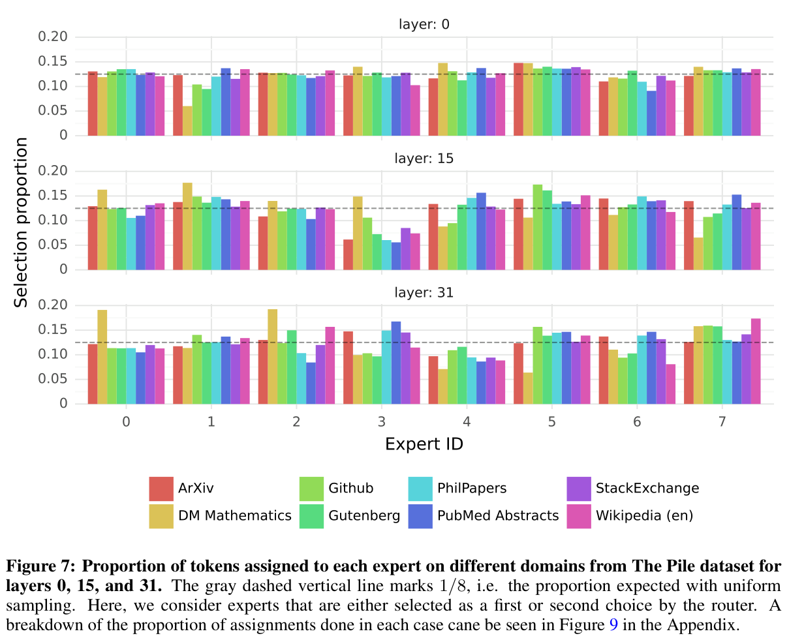
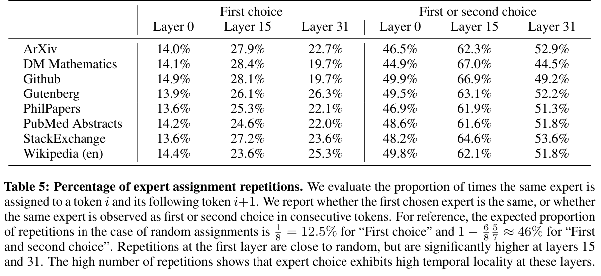
（接上页）连续分配的比例，在较高层中显著高于随机分配时的比例。这会影响如何优化模型，以实现快速训练和推理。例如，采用专家并行时，局部性较高的情况更有可能导致某些专家被过度分配。反过来，也可以利用这种局部性进行缓存，如 [11] 中所做的那样。附录图 10 给出了所有层及各个数据集上这些相同专家出现频率的更完整视图。
本文介绍了 Mixtral 8x7B，这是第一个在开源模型中达到最先进性能的专家混合网络。Mixtral 8x7B Instruct 在人工评测基准上超过 Claude-2.1、Gemini Pro 和 GPT-3.5 Turbo。由于每个时间步仅使用两个专家，Mixtral 对每个 token 仅使用 13B 激活参数，同时超过此前每个 token 使用 70B 参数的最佳模型（Llama 2 70B）。我们以 Apache 2.0 许可证公开发布训练后的模型及其微调版本。通过分享我们的模型，我们希望促进新技术和应用的发展，使广泛的行业和领域从中受益。
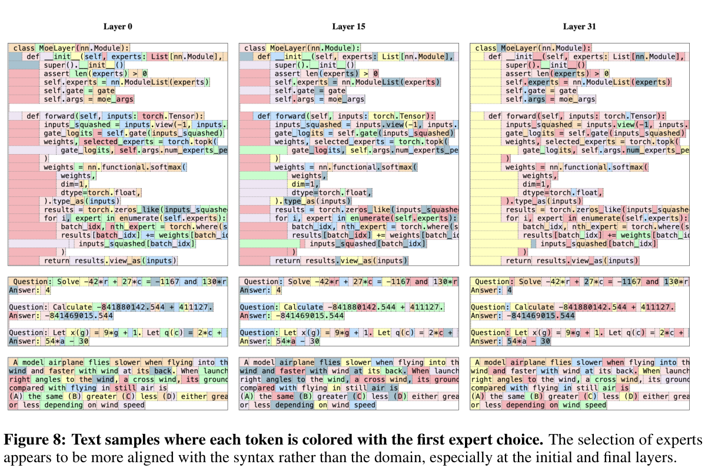
我们感谢 CoreWeave 和 Scaleway 团队在模型训练期间提供的技术支持。我们感谢 NVIDIA 支持我们集成 TensorRT-LLM 和 Triton，并与我们一起努力，使稀疏专家混合模型兼容 TensorRT-LLM。
[1] Jacob Austin, Augustus Odena, Maxwell Nye, Maarten Bosma, Henryk Michalewski, David Dohan, Ellen Jiang, Carrie Cai, Michael Terry, Quoc Le, 等。 使用 LLM 进行程序合成。 arXiv 预印本 arXiv:2108.07732, 2021.
[2] Zhangir Azerbayev, Hailey Schoelkopf, Keiran Paster, Marco Dos Santos, Stephen McAleer, Albert Q Jiang, Jia Deng, Stella Biderman, and Sean Welleck. Llemma：面向数学的开放语言模型。 arXiv 预印本 arXiv:2310.10631, 2023.
[3] Yonatan Bisk, Rowan Zellers, Jianfeng Gao, Yejin Choi, 等。 PIQA：以自然语言进行物理常识推理。 载于 Proceedings of the AAAI conference on artificial intelligence, 第 7432–7439 页, 2020.
[4] Mark Chen, Jerry Tworek, Heewoo Jun, Qiming Yuan, Henrique Ponde de Oliveira Pinto, Jared Kaplan, Harri Edwards, Yuri Burda, Nicholas Joseph, Greg Brockman, 等。 评估在代码上训练的 LLM。 arXiv 预印本 arXiv:2107.03374, 2021.
[5] Eunsol Choi, He He, Mohit Iyyer, Mark Yatskar, Wen-tau Yih, Yejin Choi, Percy Liang, and Luke Zettlemoyer. QuAC：上下文中的问答。 arXiv 预印本 arXiv:1808.07036, 2018.
[6] Aidan Clark, Diego De Las Casas, Aurelia Guy, Arthur Mensch, Michela Paganini, Jordan Hoffmann, Bogdan Damoc, Blake Hechtman, Trevor Cai, Sebastian Borgeaud, 等。 路由语言模型的统一 scaling laws。 载于 国际机器学习会议, 第 4057–4086 页. PMLR, 2022.
[7] Christopher Clark, Kenton Lee, Ming-Wei Chang, Tom Kwiatkowski, Michael Collins, and Kristina Toutanova. BoolQ：探索自然是非问题出人意料的难度。 arXiv 预印本 arXiv:1905.10044, 2019.
[8] Peter Clark, Isaac Cowhey, Oren Etzioni, Tushar Khot, Ashish Sabharwal, Carissa Schoenick, and Oyvind Tafjord. 以为你已经解决了问答问题？试试 ARC，AI2 推理挑战。 arXiv 预印本 arXiv:1803.05457, 2018.
[9] Karl Cobbe, Vineet Kosaraju, Mohammad Bavarian, Mark Chen, Heewoo Jun, Lukasz Kaiser, Matthias Plappert, Jerry Tworek, Jacob Hilton, Reiichiro Nakano, 等。 训练验证器以解决数学应用题。 arXiv 预印本 arXiv:2110.14168, 2021.
[10] Jwala Dhamala, Tony Sun, Varun Kumar, Satyapriya Krishna, Yada Pruksachatkun, Kai-Wei Chang, and Rahul Gupta. BOLD：衡量开放式语言生成偏见的数据集与指标。 载于 2021 年 ACM 公平性、问责制与透明性会议论文集, 第 862–872 页, 2021.
[11] Artyom Eliseev and Denis Mazur. 通过卸载实现专家混合语言模型的快速推理。 arXiv 预印本 arXiv:2312.17238, 2023.
[12] William Fedus, Jeff Dean, and Barret Zoph. 深度学习中稀疏专家模型的综述。 arXiv 预印本 arXiv:2209.01667, 2022.
[13] Trevor Gale, Deepak Narayanan, Cliff Young, and Matei Zaharia. Megablocks：使用专家混合进行高效稀疏训练。 arXiv 预印本 arXiv:2211.15841, 2022.
[14] Leo Gao, Stella Biderman, Sid Black, Laurence Golding, Travis Hoppe, Charles Foster, Jason Phang, Horace He, Anish Thite, Noa Nabeshima, 等。 The Pile：用于语言建模的 800GB 多样化文本数据集。 arXiv 预印本 arXiv:2101.00027, 2020.
[15] Hussein Hazimeh, Zhe Zhao, Aakanksha Chowdhery, Maheswaran Sathiamoorthy, Yihua Chen, Rahul Mazumder, Lichan Hong, and Ed Chi. DSelect-k：专家混合中的可微选择及其在多任务学习中的应用。 神经信息处理系统进展, 34:29335–29347, 2021.
[16] Dan Hendrycks, Collin Burns, Steven Basart, Andy Zou, Mantas Mazeika, Dawn Song, and Jacob Steinhardt. 衡量大规模多任务语言理解。 arXiv 预印本 arXiv:2009.03300, 2020.
[17] Dan Hendrycks, Collin Burns, Saurav Kadavath, Akul Arora, Steven Basart, Eric Tang, Dawn Song, and Jacob Steinhardt. 使用 MATH 数据集衡量数学解题能力。 arXiv 预印本 arXiv:2103.03874, 2021.
[18] Albert Q Jiang, Alexandre Sablayrolles, Arthur Mensch, Chris Bamford, Devendra Singh Chaplot, Diego de las Casas, Florian Bressand, Gianna Lengyel, Guillaume Lample, Lucile Saulnier, 等。 Mistral 7B。 arXiv 预印本 arXiv:2310.06825, 2023.
[19] Mandar Joshi, Eunsol Choi, Daniel S Weld, and Luke Zettlemoyer. TriviaQA：用于阅读理解的大规模远程监督挑战数据集。 arXiv 预印本 arXiv:1705.03551, 2017.
[20] Tom Kwiatkowski, Jennimaria Palomaki, Olivia Redfield, Michael Collins, Ankur Parikh, Chris Alberti, Danielle Epstein, Illia Polosukhin, Jacob Devlin, Kenton Lee, 等。 Natural Questions：问答研究基准。 计算语言学协会汇刊, 第 453–466 页, 2019.
[21] Dmitry Lepikhin, HyoukJoong Lee, Yuanzhong Xu, Dehao Chen, Orhan Firat, Yanping Huang, Maxim Krikun, Noam Shazeer, and Zhifeng Chen. GShard：使用条件计算和自动分片扩展巨型模型。 arXiv 预印本 arXiv:2006.16668, 2020.
[22] Todor Mihaylov, Peter Clark, Tushar Khot, and Ashish Sabharwal. 一套盔甲能够导电吗？一个新的开放书本问答数据集。 arXiv 预印本 arXiv:1809.02789, 2018.
[23] Amirkeivan Mohtashami and Martin Jaggi. Landmark attention：为 Transformer 提供随机访问的无限上下文长度。 arXiv 预印本 arXiv:2305.16300, 2023.
[24] Alicia Parrish, Angelica Chen, Nikita Nangia, Vishakh Padmakumar, Jason Phang, Jana Thompson, Phu Mon Htut, and Samuel R Bowman. BBQ：人工构建的问答偏见基准。 arXiv 预印本 arXiv:2110.08193, 2021.
[25] Rafael Rafailov, Archit Sharma, Eric Mitchell, Stefano Ermon, Christopher D Manning, and Chelsea Finn. DPO：你的语言模型其实就是 RM。 arXiv 预印本 arXiv:2305.18290, 2023.
[26] Keisuke Sakaguchi, Ronan Le Bras, Chandra Bhagavatula, and Yejin Choi. WinoGrande：大规模对抗性 Winograd Schema 挑战。 ACM 通讯, 第 99–106 页, 2021.
[27] Maarten Sap, Hannah Rashkin, Derek Chen, Ronan LeBras, and Yejin Choi. SocialIQA：关于社会互动的常识推理。 arXiv 预印本 arXiv:1904.09728, 2019.
[28] Noam Shazeer, Azalia Mirhoseini, Krzysztof Maziarz, Andy Davis, Quoc Le, Geoffrey Hinton, and Jeff Dean. 超大规模神经网络：稀疏门控专家混合层。 arXiv 预印本 arXiv:1701.06538, 2017.
[29] Mirac Suzgun, Nathan Scales, Nathanael Schärli, Sebastian Gehrmann, Yi Tay, Hyung Won Chung, Aakanksha Chowdhery, Quoc V Le, Ed H Chi, Denny Zhou, , and Jason Wei. 具有挑战性的 BIG-Bench 任务以及 chain-of-thought 能否解决它们。 arXiv 预印本 arXiv:2210.09261, 2022.
[30] Alon Talmor, Jonathan Herzig, Nicholas Lourie, and Jonathan Berant. CommonsenseQA：面向常识知识的问答挑战。 arXiv 预印本 arXiv:1811.00937, 2018.
[31] Ashish Vaswani, Noam Shazeer, Niki Parmar, Jakob Uszkoreit, Llion Jones, Aidan N Gomez, Łukasz Kaiser, and Illia Polosukhin. 你所需要的只有 attention。 神经信息处理系统进展, 30, 2017.
[32] Rowan Zellers, Ari Holtzman, Yonatan Bisk, Ali Farhadi, and Yejin Choi. HellaSwag：机器真的能够补完你的句子吗？ arXiv 预印本 arXiv:1905.07830, 2019.
[33] Lianmin Zheng, Wei-Lin Chiang, Ying Sheng, Siyuan Zhuang, Zhanghao Wu, Yonghao Zhuang, Zi Lin, Zhuohan Li, Dacheng Li, Eric Xing, 等。 使用 MT-Bench 和 Chatbot Arena 评判 LLM-as-Judge。 arXiv 预印本 arXiv:2306.05685, 2023.
[34] Wanjun Zhong, Ruixiang Cui, Yiduo Guo, Yaobo Liang, Shuai Lu, Yanlin Wang, Amin Saied, Weizhu Chen, and Nan Duan. AGIEval：用于评估基础模型的以人为中心的基准。 arXiv 预印本 arXiv:2304.06364, 2023.
[35] Yanqi Zhou, Tao Lei, Hanxiao Liu, Nan Du, Yanping Huang, Vincent Zhao, Andrew M Dai, Quoc V Le, James Laudon, 等。 采用专家选择路由的专家混合。 神经信息处理系统进展, 35:7103–7114, 2022.
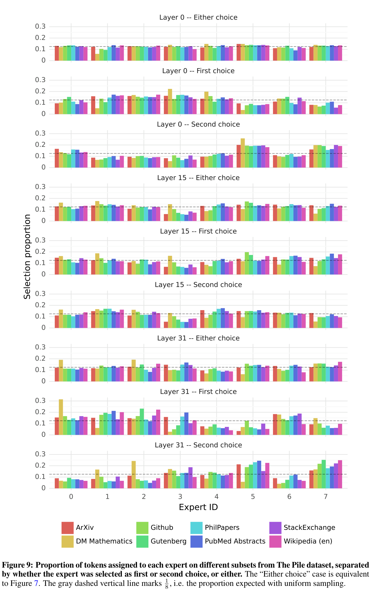
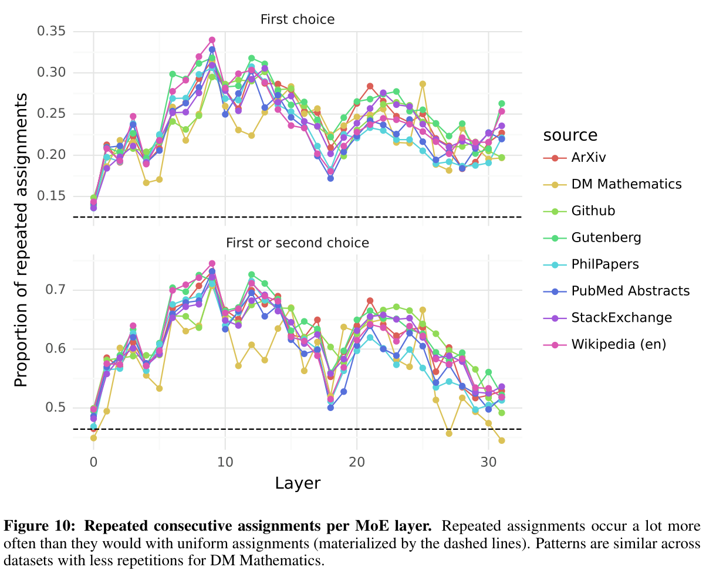